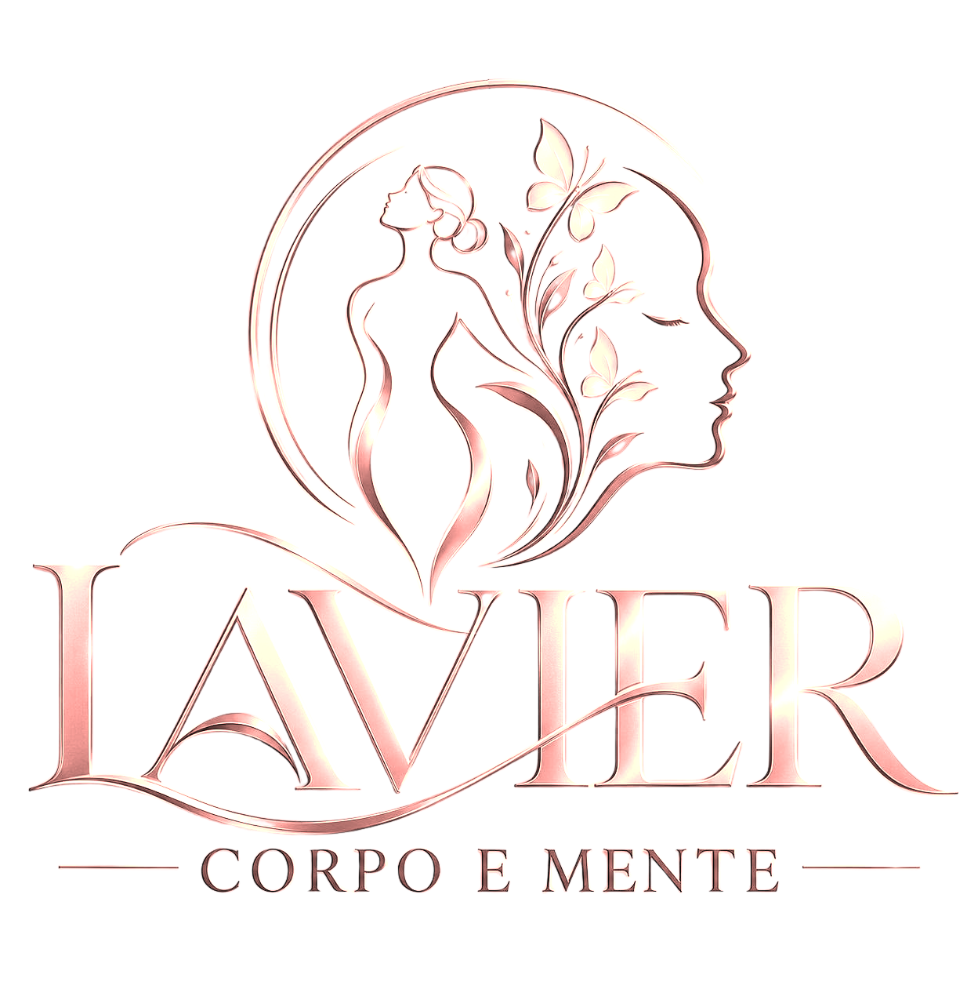
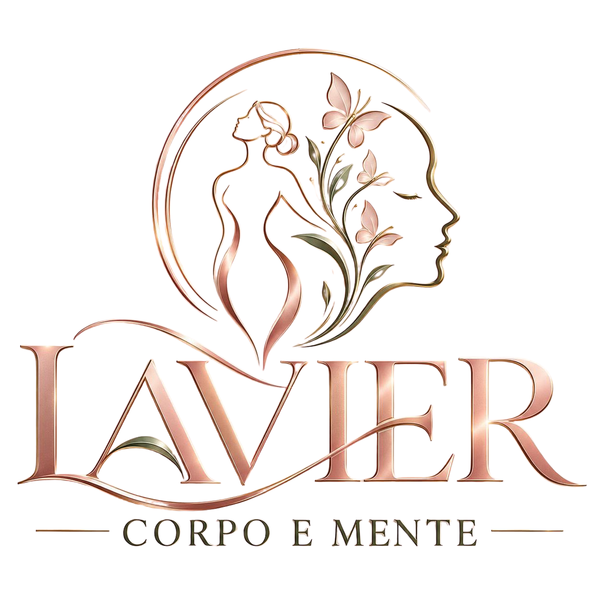
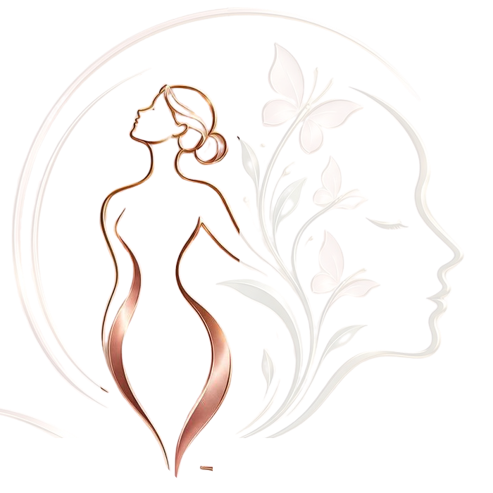
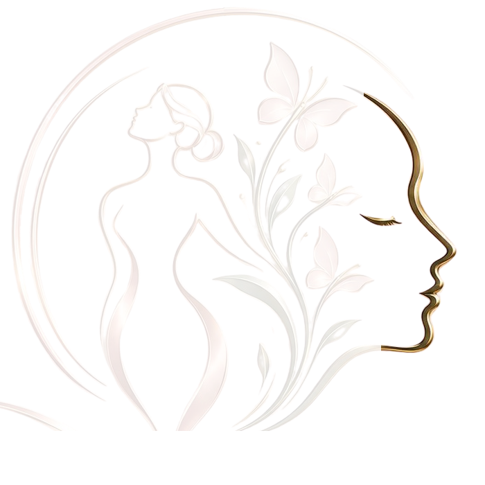
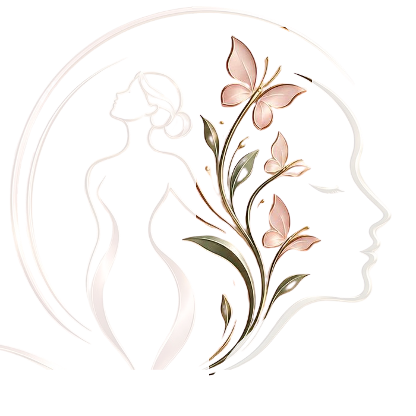
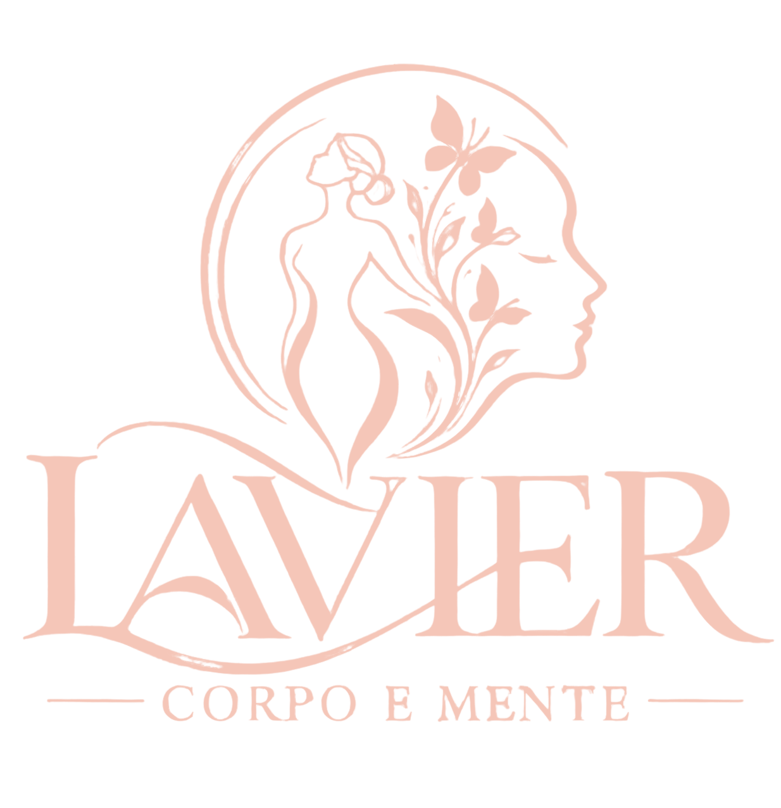

Respire.
Seu corpo sabe
o caminho.
@LAVIERCORPOEMENTESeu corpo sabe
o caminho.

2026Esta apresentação reúne a identidade visual da Lavier Corpo & Mente. Nos próximos slides, você verá como os elementos da marca se conectam para expressar, em cada ponto de contato, o que a Lavier representa:
Acolhimento • Serenidade • Sofisticação • Transformação
Larissa, este material foi feito com cuidado em cada detalhe. Fique à vontade para aprovar ou pedir ajustes em qualquer página: a palavra final é sua.
A identidade da Lavier partiu do que a clínica oferece: estética corporal, estética facial e terapia integrativa, sempre a partir de uma avaliação individual.
A marca precisava traduzir uma ideia simples: cuidar do corpo e da mente ao mesmo tempo, para que a autoestima acompanhe o resultado dos tratamentos.
O desafio era criar uma presença sofisticada que continuasse acolhedora, feminina e próxima. Uma identidade que transmite profissionalismo e eleva a percepção de valor, sem perder a calma que a cliente sente ao entrar.
Com o símbolo, o logotipo, a tipografia e a paleta definidos, este documento consolida o sistema visual e verbal da marca e mostra como ele se aplica no dia a dia.
Porque beleza também é cuidado. Cada atendimento deve ser uma pausa, em que o corpo é tratado e a mente descansa, para que a mulher se reconheça no próprio resultado.
Começando por uma avaliação individual: uma conversa sobre objetivos e rotina, a avaliação do corpo e da pele e um plano feito para cada caso. Técnica, escuta e atenção aos detalhes.
Estética corporal, estética facial e terapia integrativa, com protocolos definidos depois da avaliação de cada cliente.
Do desenho do símbolo à paleta, da tipografia ao jeito de falar, cada decisão traduz este DNA: uma beleza serena, natural e sofisticada, que acolhe antes de transformar.
No centro, os três atributos principais da marca. No círculo externo, as personalidades que dão suporte a eles.
“Beleza é quando corpo e mente encontram o mesmo ritmo.”
A Lavier nasce do encontro entre o toque que cuida e a pausa que transforma. Uma marca feminina sem excessos, sofisticada sem distância.
Cada encontro entre a cliente e a Lavier é uma chance de reforçar a marca. Por isso mapeamos os pontos de contato, físicos e digitais, para manter o mesmo cuidado em cada detalhe.

Recepção, avaliação individual, linguagem e postura no cuidado.
Fachada e placa, decoração, aromas, música, iluminação e sinalização interna.
Instagram (feed, stories e destaques) e WhatsApp Business (foto, boas-vindas e respostas).
Cartão de visita, ficha de avaliação, folha de orientações e cartão fidelidade.
Rótulos, frascos, sacolas e cartões de presente.
Mensagem de agradecimento, lembrete de retorno e pesquisa de satisfação.

I · CorpoO corpo de uma mulher, desenhado em linhas fluidas. Representa presença, movimento e autocuidado.

II · MenteUm rosto visto de lado, de olhos fechados. Representa a mente: silêncio, equilíbrio e consciência.

III · TransformaçãoUma planta com flores e borboletas que nasce entre o corpo e a cabeça. Representa o florescer de uma nova relação consigo mesma.
O círculo aberto envolve o corpo, a cabeça e a planta que floresce entre eles.
LAVIER em serifa clássica, atravessado pela onda que nasce do símbolo. A folha oliva no A repete a planta.
CORPO E MENTE, entre dois fios. Diz em palavras o que o símbolo mostra. As três partes aparecem sempre juntas e na mesma proporção.
ABCDEFGHIJKLMNOPQRSTUVWXYZ
abcdefghijklmnopqrstuvwxyz 0123456789
Usada nos títulos e nas frases de destaque. É uma serifa de desenho editorial, com contraste entre traços finos e grossos e curvas suaves, que conversa com a serifa do logotipo LAVIER.
O itálico em rosé marca a segunda parte dos títulos, como uma respiração no fim da frase.
ABCDEFGHIJKLMNOPQRSTUVWXYZ
abcdefghijklmnopqrstuvwxyz 0123456789
Usada em textos, legendas, botões e informações. Tem desenho moderno e equilibrado e é fácil de ler em qualquer tamanho, no celular e no papel.
A escolha das cores de uma marca vai além da estética. Cada tom desperta sensações, constrói percepções e reforça a personalidade que queremos transmitir.
Para a Lavier, a paleta une três universos: o creme e os rosés, que trazem calor, feminilidade e acolhimento; o dourado, que acrescenta o brilho do metal; e os verdes, que trazem natureza, equilíbrio e a calma da mente.
Juntos, eles criam uma atmosfera leve e sofisticada, que traduz em cor o cuidado com o corpo e com a mente.
Contraste medido pela norma de acessibilidade WCAG: texto corrido pede 4,5:1, títulos grandes pedem 3:1.
Nenhum texto, foto ou borda entra na área tracejada. Quanto mais ar em volta, mais a marca parece o que é.
Abaixo disso, o descritor CORPO E MENTE deixa de ser lido. Para ícones pequenos (perfil, favicon, carimbo), será preciso uma versão reduzida feita a partir do arquivo vetorial.
O círculo do símbolo, nunca fechado. Emoldura fotos e citações.
Linha fina que abre sobretítulos e separa blocos.
Dois cantos opostos marcam cartões e destaques.
A curva que atravessa o logotipo. Bordas de faixas e divisões.
A mesma calma do visual, nas palavras. Frases curtas, verbos simples e nenhuma promessa que o corpo não possa cumprir.
Fala com a cliente como quem recebe alguém na sala.
Explica cada etapa com palavras do dia a dia.
Elegante no texto, próxima no jeito de dizer.
Nesta etapa, o conceito ganha corpo. A seguir, algumas possibilidades de aplicação da identidade em pontos de contato da Lavier.
O posicionamento da Lavier se transforma em experiência concreta.
As peças têm caráter ilustrativo: servem para visualizar como a identidade se comporta em situações reais e facilitar a aprovação, os ajustes e as decisões finais antes da produção.
Na primeira consulta, seus objetivos, seu histórico e o plano feito para o seu caso.
Agendar avaliação
2026